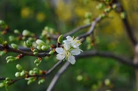

Pavasaris
Pavasaris jeb ziedonis ir pārejas gadalaiks
no ziemas uz vasaru.
Šis gadalaiks ir laiks, kad daba pamostas un
atdzīvojas no ziemas bargā sala.
Astronomiskais
pavasaris ziemeļu puslodē sākas pavasara ekvinokcijas
brīdī (20. vai 21. martā).
Pavasara tipi
- Kalendārais pavasaris — laika posms no 1.
marta līdz 31. maijam ieskaitot.
- Astronomiskais pavasaris — ziemeļu puslodē
iestājas brīdī, kad saule šķērso debess ekvatoru
pavasara punktā.
Diena ar nakti ir vienādā garumā
un diena pamazām kļūs garāka par nakti.
Katru gadu
astronomiskā pavasara iestāšanās laiks nedaudz
atšķiras laika skaitīšanas sistēmas dēļ.
-
Meteoroloģiskais pavasaris — sākas, kad diennakts
vidējā gaisa temperatūra ir stabili vienāda vai
augstāka par 0 grādiem.
Pavasara mēneši
- Marts
- Aprīlis
- Maijs
